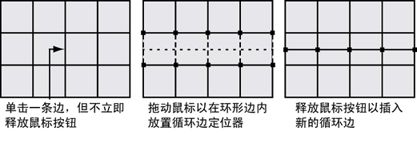

- 在场景视图中，选择多边形网格。
- 从“建模”(Modeling)菜单集中，选择“网格工具 > 插入循环边”(Mesh Tools > Insert Edge Loop) >
 。
。
- 确保默认选项设定如下：
- 保持位置(Maintain position)：与边的相对距离(Relative distance from edge)
- 自动完成(Auto complete)：启用
当“保持位置”(Maintain position)设定为“与边的相对距离”(Relative distance from edge)时，预览定位器会基于沿着边的百分比距离（25%、50% 等）进行定位。当启用“自动完成”(Auto complete)后，可以选择整个环形边并立即分割多个相应的面。
- （可选）如果希望所有新循环边遵循周围网格的曲面曲率，则启用“使用边流插入”(Insert with edge flow)。
- 单击多边形网格上您要沿着网格插入一组新边的边。不要立即释放鼠标按钮。
提示： 若要使用边流快速插入循环边，请暂时激活“使用边流插入”(Insert with edge flow)，方法是按住 Shift 键并单击要沿网格插入一组新边处的边。
此时在环形边内将显示由点组成的绿色循环边预览定位器线，该线选定垂直于单击的边。释放鼠标按钮后，循环边预览定位器会指示将要沿着网格插入新循环边的位置。
 - 根据网格上的选定环形边的方向，将鼠标从任意一侧拖到另一侧，或前后滚动鼠标以定位循环边预览定位器。
- 将循环边定位器移动到需要的位置后，释放鼠标按钮。
此时，新的循环边便已插入到与选定环形边关联的多边形面中。新的循环边会一直保持选中状态，以便您可以在这些边上执行其他操作。
- 完成分割所需的多边形后，执行下列操作之一退出工具：
- 在工具箱中选择“选择工具”(Select Tool)（热键：q）。
- 选择另一种工具或功能，对选定的环形边执行下一个操作。
例如，选择“移动工具”(Move Tool)来移动选定的循环边，选择来挤出选定的循环边，或将循环边选择转化为面。